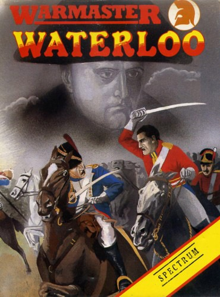
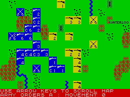

Waterloo


{kind=link}

| Publisher: | Lothlorien |
| Price: | £9.95 |
| Year: | 1985 |
| Source: | CRASH, Issue 23 |

This must be the most popular period enjoyed by the traditional wargamer (with the possible exception of Ancient) and so it was a pleasure to find a new Napoleonic game released — on the classic battle itself. I was doubly impressed to discover Lothlorien were the publishers. They got off to something of a dodgy start but The Bulge was a classic and my respect for them has been far higher since. The packaging of their products has certainly improved since the early days. Waterloo comes beautifully packaged in a large format cassette holder with excellent artwork and a slim but excellent manual which many conventional wargames companies would do well to examine before they released their next title.
The game is a strategic simulation on divisional level of the battle that finally brought Napoleon to his downfall. Napoleon was on his way to Brussels to gain support for his forces from Brussels. However, he must first defeat the Anglo-Dutch force commanded by the Duke of Wellington from the Seventh Coalition. Napoleon had a stronger force than his opponent but Wellington had superb defensive positions that cut across his adversary’s front lines. Plus, he knew that if he fought a defensive strategy long enough, reinforcements would soon arrive in the form of General Blucher’s Prussian army. And so the stage is set for a one player game with the human participant playing Napoleon.

English troops back towards Waterloo.
Cavalry units guard against any outflanking
attempt by Wellington’s forces
The game has has a smooth scrolling ‘plan’ of the battlefield as a display. The scrolling really is smooth on this game — far superior to other games of this nature that boast the same feature. Units are displayed as divisional markers, each unit coloured according to nationality. Displayed on the markers is information pertaining to the nature of the unit such as whether it is cavalry or infantry. On the French units the Corps number and command status is also shown. On requesting a detailed report of a unit, the marker widens to twice its original length and the units strength in terms of fighting men and its morale are displayed. On enemy units however, only the strength is displayed.
Handling the units is accomplished by using a straight-forward mini-menu at the bottom of the display area in conjunction with cursor control. Units can be commanded as a Corps (by giving a general command to the leading division) or individually. It’s possible to alter the level of difficulty of the game by varying the number of unit orders that may exist simultaneously. Units may actually leave their set positions to follow commanding units if they leave the immediate vicinity.
One of the interesting features of the game is the way a unit may be prevented from achieving its orders because of enemy resistance (or maybe just presence) but after the threat is passed, the unit will continue on its original course of action. This isn’t a totally original feature to computer wargaming but rarely is it used so realistically. One up for Lothlorien.
Movement is affected by type of unit and terrain, as you would expect but terrain also affects combat strength to varying degrees, depending on whether they are attacking or defending. Combat strength is also (logically) affected by how many active men exist in the unit and its morale. Combat takes place between any two adjacent enemy units. Combat losses are displayed as they occur, over the relevant unit. This is only brief but you can study the situation more fully at the end of the game turn.
Combat can, of course, result in one of the divisions involved retreating or routing. Routing units are removed from play immediately. Retreating units may be eliminated of their paths of retreat are not clear. Because such units are considered to be at least in partial disarray, they will inflict fewer casualties when fighting.
When orders have been issued to all the units for that turn, the computer carries out all the movements and combat actions in a clearly defined manner. During this time, various commanders will communicate with you and explain that the orders you have given them are problematical because of a change in the unit’s situation. They will suggest a course of action as an alternative and you answer the question depending on your strategy.
The manual contains detailed explanations of the victory conditions and they, themselves offer a challenging game for the player whilst remaining balanced. On the subject of which, Lothlorien have made one omission and two alterations to details of the battle in order to make it more playable. Firstly, there is no consideration taken of artillery (a shame considering all the trouble Napoleon took to get it there), so there is no indirect fire phase. Secondly, Napoleon has been given an extra Corps, to balance numbers, whilst Blucher’s minions arrive on the scene earlier to add to the difficulty.
Lothlorien really have come a long way since those early days. This wargame is fast, playable and deceptively complicated. Designed with a care rarely encountered in computer wargaming, it employs some of the best features of the purists’ hobby — and to good effect. A classic game for a classic subject.
Presentation 90%
Excellent
Rules 85%
Deceptively simple but very direct
Playability 87%
‘Fool proof’ approach successfully implemented
Graphics 92%
Beautiful scrolling for a wargame
Authenticity 87%
Details only modified slightly and for playability. General historical integrity maintained
Value for money 95%
Plenty of scope within the game. Won’t wear out overnight by any means
Overall 92%
It’s great to have a classic game to review